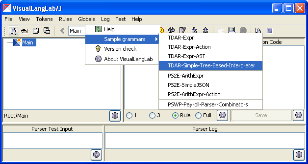
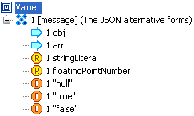
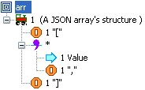
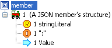

So that users may quickly become familiar with grammar-trees, VisualLangLab has some built-in sample grammars that can be inspected and edited. These grammars can be opened by invoking Help -> Sample grammars from the main menu as shown in Figure-1 below.
The grammar-trees of these parsers are shown in the sub-sections below. However, for best results readers should start VisualLangLab and use its menus to review the grammar-trees, understand the operations that can be performed on them, and also run them using their own text input.
VisualLangLab provides numerous menus for editing grammar-trees in parsers. Those same tools can also be used to review the structure and properties of grammar-trees. When any of the built-in parsers is opened, the tool-bar's ComboBox (shown deployed in Figure-2 below) can be used to list the constituent parser-rules, and to select one of them.

When a parser-rule is selected its grammar-tree is displayed. The arrangement, type, and annotations of the nodes should be examined carefully. The grammar-tree with its icons and annotations reveals most of the information about the corresponding parser clause. However, certain other information (action-code for instance) is not displayed unless the specific grammar-node tree is selected.
The icons used in the grammar-tree are designed to be intuitive and meaningful to anyone familiar with parsers, and are explained in Editing the Grammar Tree.
The structure of the parse-tree (or AST) of the selected grammar-tree node is displayed in the TextArea on the right of the grammar-tree. Observe that the displayed information changes as different grammar-tree nodes are selected. The format of the information displayed is described in AST and Action Code.
Action-code (a Javascript or Scala function assigned to a node to process its AST) can be optionally associated with any grammar-tree node. Action-code associated with any grammar-tree node is displayed (and edited) in the TextArea on the right of the parse-tree. The ArithExpr parser described below illustrates action-code functions in both languages. The design of action-code functions is described in AST and Action Code.
Figure-3 below shows the grammar-tree expr of the builtin ArithExpr parser being tested with the input text 12 / 3 + 5 * 4. To test-run the displayed grammar-tree just enter the test input into the Parser Test Input area (as at "A" in Figure-3), and click the Parse input toolbar button ("B" in the figure). The results of the run (or any error messages) appear in the Parser Log area ("C" in the figure).

More information about testing can be found in Testing Parsers
As mentioned elsewhere, the grammar trees in Figure-2 implement the following grammar clauses:
expr ::= term {"*" term | "-" term}
factor ::= floatingPointNumber | "(" expr ")"
term ::= factor {"*" factor | "/" factor}
However, the process and knowledge used to transcribe a textual grammar (as in the lines above) into a grammar-tree in VisualLangLab is not described here. That information can be found in Editing the Grammar Tree. The purpose of this section is merely to provide a starting point that new users can use to learn the tool's menus and options. The grammar-trees of this parser have some optional but interesting features that should be reviewed carefully.
| expr | factor | term |
| | |
All three grammar-trees use an action-code function at the top-level (the node just below the root-node). The action-code of each grammar-tree can be displayed by clicking the top-level node. Note that grammar-tree nodes with associated action-code can be spotted by the presence of the action annotation (within square brackets that group optional annotations).
Also note the drop annotation (and the corresponding icon overlay) on several literal tokens in all three grammar-trees. A dropped part of a grammar-tree contributes nothing to the AST -- though it is expected to be seen in the input. The use of drop is explained fully in Editing the Grammar Tree.
The grammar-trees of the SimpleJSON parser are shown in Figure-3 below for easy reference.
| value | arr | member | obj |
|  |  |  |  |
Two of the grammar-trees in this parser (arr and obj) use a RepSep node -- something not many parser enthusiasts know. For more details see Editing the Grammar Tree.
This grammar is identical to the ArithExpr grammar discussed above (and depicted in Figure-4). While the grammars are structurally identical to the ArithExpr versions, each one includes a snippet of action-code associated with the apex node (the node just under the root-node). The action-code can be seen in the Action Code area when the owning node is selected as in Figure-6 below.
The action-code (explained fully in AST and Action Code) evaluates the AST (the result of parsing the arithmetic expression) to a number. The effect of this can be seen by testing the parser with the same input (12 / 4 + 5 * 4). The parser's result should be 23.0.
For purposes of illustration, the parser has two action-code snippets written in Javascript, and one in Scala. These are the two supported languages for action-code.